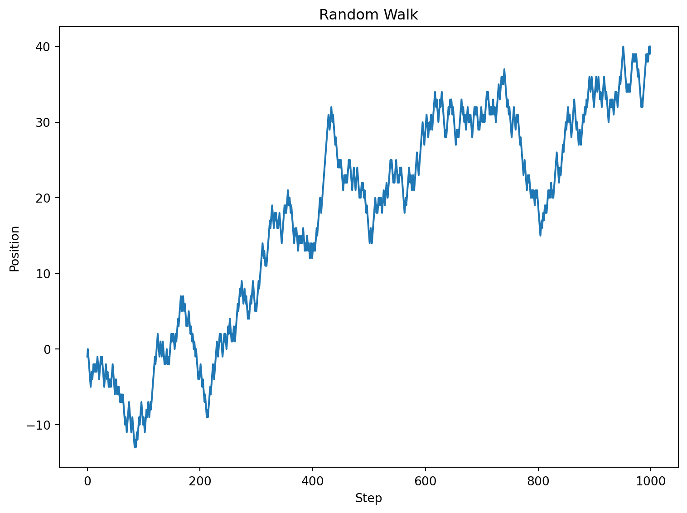
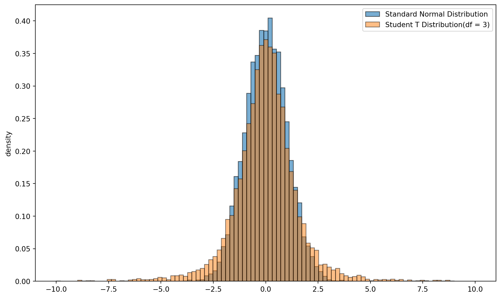
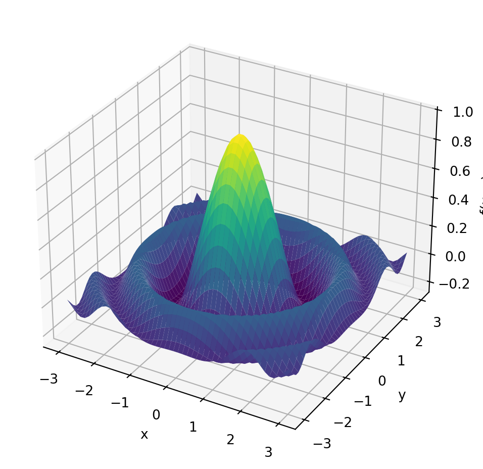
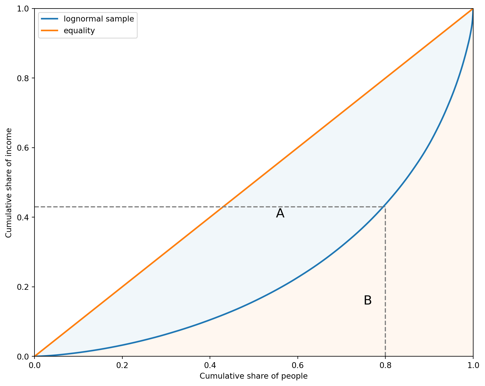
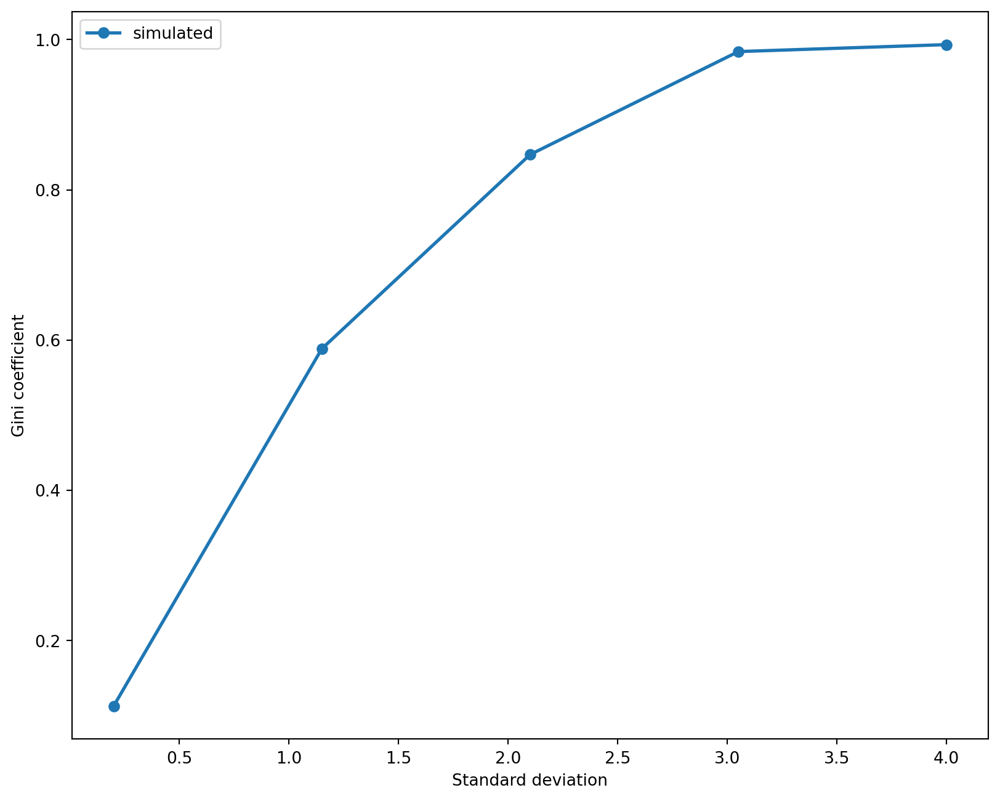

import numpy as np
a = np.array([1, 2, 3, 4])
print(a)[1 2 3 4]本部分简要介绍Numpy的基础用法，并用几个例子说明随机数生成器的作用。
有许多种方法创建数组，下面是一些简单的例子，使用np.array()函数，将列表、元组转化为数组：
import numpy as np
a = np.array([1, 2, 3, 4])
print(a)[1 2 3 4]注意，与列表不同，Numpy数组只能包含相同类型的数据，下面的例子中，np.array()函数自动将列表中的整数转换为浮点数：
b = np.array([3.14, 4, 2, 3])
barray([3.14, 4. , 2. , 3. ])列表总是一维的，Numpy数组可以是多维的，例如下面的例子使用：
data = np.array([[1.5, -0.1, 3],
[0, -3, 6.5]])
dataarray([[ 1.5, -0.1, 3. ],
[ 0. , -3. , 6.5]])数组data是二维数组，可以查看属性ndim和shape：
data.ndim
data.shape(2, 3)可以对data进行通常的数学运算：
print(data * 10)
print(data + data)[[ 15. -1. 30.]
[ 0. -30. 65.]]
[[ 3. -0.2 6. ]
[ 0. -6. 13. ]]Numpy也有函数来生成一些特定格式的数组,如表 Table 1 所示：
| 函数名 | 描述 |
|---|---|
array |
将输入数据（列表、元组、数组或其他序列类型）转换为 ndarray，可以自动推断或显式指定数据类型；默认会复制输入数据 |
asarray |
将输入转换为 ndarray，如果输入已经是 ndarray，则不会进行复制 |
arange |
类似于内置的 range，但返回的是 ndarray 而不是列表 |
ones, ones_like |
生成给定形状和数据类型的全 1 数组；ones_like 以另一个数组为模板，生成相同形状和数据类型的全 1 数组 |
zeros, zeros_like |
类似于 ones 和 ones_like，但生成的是全 0 数组 |
empty, empty_like |
通过分配新内存创建新数组，但不会像 ones 和 zeros 那样填充值 |
full, full_like |
生成给定形状和数据类型的数组，所有值都设置为指定的“填充值”；full_like 以另一个数组为模板，生成相同形状和数据类型的填充值数组 |
eye,identity |
生成单位矩阵（对角线为 1，其余为 0） |
下面是一些例子：
zeros = np.zeros(10)
print(zeros)
ones = np.ones((2,3), dtype=float)
print(ones)
# 生成零矩阵
idents = np.identity(3)
print(idents)
evens = np.arange(0, 20, 2)
print(evens)
grids = np.linspace(0, 1, 21)
print(grids)[0. 0. 0. 0. 0. 0. 0. 0. 0. 0.]
[[1. 1. 1.]
[1. 1. 1.]]
[[1. 0. 0.]
[0. 1. 0.]
[0. 0. 1.]]
[ 0 2 4 6 8 10 12 14 16 18]
[0. 0.05 0.1 0.15 0.2 0.25 0.3 0.35 0.4 0.45 0.5 0.55 0.6 0.65
0.7 0.75 0.8 0.85 0.9 0.95 1. ]Numpy中random子库包含丰富的生成随机数的函数，用来生成数组进行模拟运算。如 np.random.normal()可以生成正态分布随机数、np.random.randint()用来生成随机整数：
#生成正态分布
nums_norm = np.random.normal(loc=0, scale=1, size=(4, 3))
print(nums_norm)
nums_int = np.random.randint(low=1, high=11, size=(2, 10))
print(nums_int)[[ 0.55566037 0.50309805 1.10401547]
[ 2.37296246 -1.30508066 -0.33671401]
[ 0.47472266 -0.08108065 0.02869927]
[ 1.39099264 1.82176333 1.48874973]]
[[ 7 5 8 5 10 7 2 2 9 6]
[ 8 10 8 7 9 4 2 1 2 7]]数组采用的是向量化操作，运算速度比列表要快许多。让我们通过一个简单的例子来直观感受两者的速度差异：对一百万个元素的集合求平方运算，一种使用列表推导式，一种采用数组。
import numpy as np
import time
#
list_data = list(range(1000000))
array_data = np.arange(1000000)
# 使用列表推导式进行运算
start_time = time.time()
list_result = [x ** 2 for x in list_data]
end_time = time.time()
print(f"Time: {end_time - start_time} s")
# 使用NumPy的向量化运算
start_time = time.time()
array_result = array_data ** 2
end_time = time.time()
print(f"Time: {end_time - start_time} s")Time: 0.05379652976989746 s
Time: 0.0019237995147705078 s可见列表方式运算耗费的时间是数组运算的几十倍。
注意索引与列表一样，从0开始，在选择元素时不包括右侧。
z = np.array((1,2,3,4,5))
z[0]
z[0:2]
z[-1]
z[::2]
z[::-1]array([5, 4, 3, 2, 1])2维数组用类似行和列的方式进行切片：
z = np.array([[1,2],
[3, 4]])
z[0, 0]
z[0, :]
z[:, 1]array([2, 4])数组方法众多，
这些方法用于对数组中的数据进行汇总计算，返回一个单一的值或一个较小的数组。例如：
arr.sum(): 计算数组所有元素的总和，默认是所有值之和；arr.mean(): 计算数组元素的平均值。arr.min(), arr.max(): 找出数组中的最小值和最大值。arr.std(), arr.var(): 计算数组的标准差和方差。arr.argmin(), arr.argmax(): 返回数组中最小值或最大值所在的索引。要注意在2D数组时，参数axis = 0按列求和（默认），或 arr.sum(axis=1)按行求和。
import numpy as np
np.random.seed(123)
x = np.random.normal(loc=0, scale=1, size=(100, 2))
x.sum(axis=0)
x.mean(axis=0)
x.std(axis=0)array([0.98109429, 1.10461422])要寻找最大/小值所处的位置，可以使用：
x[x.argmax(axis=0)]array([[2.39236527, 0.41291216],
[0.71226464, 2.59830393]])另外，累积求和或乘积也是常见的运算。下面是一个简单随机游走过程。假设独立的随机变量，\(Z_{1},Z_{2},\cdots,Z_{n}\) ，每一个变量分别有50%的概率取值 \(1\) 或 \(-1\)。设 \(S_{0} = 0\)， \(S_{n} = \sum_{i=1}^{n}Z_{i}\) 是一个简单随机游走过程。
import numpy as np
import matplotlib.pyplot as plt
np.random.seed(123)
n_steps = 1000
steps = np.random.choice([-1, 1], size=n_steps)
walk = np.cumsum(steps)
#
fig, ax = plt.subplots(figsize=(8, 6))
ax.plot(walk)
ax.set_title('Random Walk')
ax.set_xlabel('Step')
ax.set_ylabel('Position')
plt.tight_layout()
plt.show()
这些方法用于改变数组的形状或维度，但通常不会改变数组中的数据。
arr.reshape(shape): 返回一个具有新形状的数组，但原始数组不变。例如，arr.reshape(2, 3)。arr.T: 返回数组的转置。这是一个属性，而非方法，但功能上属于形状操作。arr.flatten(): 返回一个一维数组的副本。arr.transpose(): 也是返回数组的转置，与 arr.T 类似。arr = np.arange(12).reshape(3, 4)
arr.Tarray([[ 0, 4, 8],
[ 1, 5, 9],
[ 2, 6, 10],
[ 3, 7, 11]])这些方法用于对数组进行排序或查找特定元素:
arr.sort(): 对原始数组进行就地排序。np.sort(arr): 返回一个已排序的数组副本，不改变原始数组。arr.argsort(): 返回排序后元素的索引，而不是排序后的值。np.where(): 这是一个函数，但常用于搜索操作。它根据条件返回满足条件的元素的索引。np.where(arr>4, "High", "Low")array([['Low', 'Low', 'Low', 'Low'],
['Low', 'High', 'High', 'High'],
['High', 'High', 'High', 'High']], dtype='<U4')注意，运算符 +, - , *, / 和 **，都是逐元素运算。例如：
a = np.array([1,2,3,4])
b = np.array([5,6,7,8])
a + b
a * b
a + 10
a * 10
# 2D array
A = np.ones((2,2))
B = np.ones((2,2))
A + B
A+10
A * B
(A+1) ** 2array([[4., 4.],
[4., 4.]])可以使用 @ 或 np.dot() 进行矩阵乘法。如果是向量则计算内积。
A = np.array([[1,2],
[3,4]])
B = np.array([[5,6,],
[7,8]])
A@B
#or
np.dot(A,B)
#
b = np.array([0, 1])
A@barray([2, 4])一个常用的矩阵运算是特征根和特征向量： \[ Ae = \lambda e \]
Numpy 线性代数子库中的eig()函数可以计算特征根和对应的特征向量：
A = np.array([[1, 2],
[3, 4]])
eig, vec = np.linalg.eig(A)
#print(eig)
print(vec[:, 0])[-0.82456484 0.56576746]主要与第 \(i\) 个特征根对应的特征向量是特征向量矩阵的第 \(i\) 列， vec[:,i]。
Numpy中有大量的与随机数生成器有关的函数。
下面是一个例子比较了 \(t\) 分布的厚尾特征，随机抽取了标准正态分布和t分布的随机数，绘制直方图。如果不设定随机种子数，因此每次运行结果会略有不同。
import numpy as np
import matplotlib.pyplot as plt
N = 10000
normal_data = np.random.randn(N)
t_data = np.random.standard_t(df=3, size=N)
fig, ax = plt.subplots(figsize=(10, 6))
bins = np.linspace(-10, 10, 100)
ax.hist(normal_data, bins=bins, density=True,
edgecolor="black",alpha=0.6, label='Standard Normal Distribution')
ax.hist(t_data, bins=bins, density=True,
edgecolor="black", alpha=0.5, label='Student T Distribution(df = 3)')
ax.set_label('value')
ax.set_ylabel('density')
ax.legend()
plt.tight_layout()
plt.show()
中心极限定理 (Central Limit Theorem, CLT) 是概率论中一个非常强大的定理。它指出，当从任何形状的总体中抽取足够大的独立同分布 (i.i.d.) 样本时，这些样本均值的分布将近似于正态分布，无论原始总体分布如何。样本量越大，近似程度越好。
在 Figure 1 中，我们将通过以下步骤来模拟验证 CLT：
import numpy as np
import matplotlib.pyplot as plt
population_size = 1000000
sample_size = 30
num_samples = 10000
np.random.seed(123)
population_data = np.random.exponential(
scale=2.0, size=population_size)
# population_data_uniform = np.random.uniform(
# low=0.0, high=10.0, size=population_size)
sample_means = []
for _ in np.arange(num_samples):
sample = np.random.choice(
population_data, size=sample_size,
replace=True)
sample_means.append(np.mean(sample))
sample_means = np.array(sample_means)
#
fig, ax = plt.subplots(nrows = 2, ncols= 1, figsize=(12, 12))
ax[0].hist(population_data,
bins=50, density=True,
color='skyblue', edgecolor='black', alpha=0.7)
ax[0].set_xlabel('value')
ax[0].set_ylabel('Density')
ax[0].grid(True, linestyle='--', alpha=0.6)
ax[1].hist(sample_means,
bins=50, density=True,
color='lightcoral', edgecolor='black', alpha=0.7)
ax[1].set_ylabel('Density')
ax[1].grid(True, linestyle='--', alpha=0.6)
plt.tight_layout()
plt.show()Numpy中许多函数是通用函数(universal functions)，是一种在 ndarray 数据中进行逐元素操作的函数，大多数数学函数属于此类。
例如 np.cos() 函数：
np.cos(1.0)
np.cos(np.linspace(0, 1, 3))array([1. , 0.87758256, 0.54030231])例如，我们想计算\(\frac{0}{1},\frac{1}{2},\cdots, \frac{4}{5}\):
np.arange(5) / np.arange(1, 6)array([0. , 0.5 , 0.66666667, 0.75 , 0.8 ])| 运算符 | 对应的 ufunc | 描述 | 示例 |
|---|---|---|---|
| + | np.add | 加法 | 1 + 1 = 2 |
| - | np.subtract | 减法 | 3 - 2 = 1 |
| - | np.negative | 一元取反 | -2 |
| * | np.multiply | 乘法 | 2 * 3 = 6 |
| / | np.divide | 除法 | 3 / 2 = 1.5 |
| // | np.floor_divide | 向下取整除法 | 3 // 2 = 1 |
| ** | np.power | 幂运算 | 2 ** 3 = 8 |
| % | np.mod | 取模/余数 | 9 % 4 = 1 |
考察最大化函数 \(f(x,y)\) 在区间 $ [−a,a] $ 上的最大值： \[ f(x,y)= \frac{cos(x^{2} + y^{2})}{1 + x^2 + y^2} \] 令\(a=3\)。 我们定义一个函数，然后生成数组，计算对应的-值，通过栅格（grid）搜索最大值（等于1）。
import numpy as np
from mpl_toolkits.mplot3d import Axes3D
import matplotlib.pyplot as plt
def f(x, y):
return np.cos(x**2 + y**2) / (1 + x**2 + y**2)
grid = np.linspace(-3, 3, 50)
x, y = np.meshgrid(grid, grid)
z = f(x, y)
# 最大值
max_value = np.max(z)
print("函数的最大值:", max_value)
# 绘制3D图像
fig = plt.figure(figsize=(8, 6))
ax = fig.add_subplot(111, projection='3d')
ax.plot_surface(x, y, z, cmap='viridis')
ax.set_xlabel('x')
ax.set_ylabel('y')
ax.set_zlabel('f(x, y)')
plt.show()函数的最大值: 0.9925310162998334
这个例子里，定义了两个函数，用来计算洛伦茨曲线和基尼系数。
import numpy as np # 载入numpy库
def lorenz_curve(y):
n = len(y)
y = np.sort(y) # 从小到大排序
s = np.zeros(n + 1) # 生成n+1 个数值零
s[1:] = np.cumsum(y) # 从第2个数（索引1）累计求和，使第一个数据点为（0，0）
cum_people = np.linspace(0, 1, n + 1)
cum_income = s / s[n] # s[n]为最后的值，即所有值的和
return cum_people, cum_incomen = 2000
np.random.seed(1)
sample = np.exp(np.random.randn(n))
f_vals, l_vals = lorenz_curve(sample)
#
fig, ax = plt.subplots(figsize=(10, 8))
ax.plot(f_vals, l_vals, label=f'lognormal sample', lw = 2)
ax.plot([0, 1], [0, 1], label='equality', lw = 2)
ax.fill_between(f_vals,l_vals, f_vals, alpha=0.06)
ax.fill_between(f_vals, l_vals, np.zeros_like(f_vals),alpha=0.06)
ax.vlines([0.8], [0], [0.43], linestyles='--', colors='gray')
ax.hlines([0.43], [0], [0.8], linestyles='--', colors='gray')
ax.set_xlim((0,1))
ax.set_ylim((0,1))
ax.text(0.55, 0.4,"A", fontsize=16)
ax.text(0.75,0.15,"B",fontsize=16)
ax.set_xlabel('Cumulative share of people')
ax.set_ylabel('Cumulative share of income')
ax.legend()
plt.show()
从图形上看，基尼系数 \[ G = \frac{A}{A+B} \]
实际应用中常采用的公式为： \[ G = \frac{\sum_{i=1}^{n}\sum_{j=1}^{n}\vert x_{i} - x_{j}\vert}{2n^{2}\bar{x}} = \frac{\sum_{i=1}^{n}\sum_{j=1}^{n}\vert x_{i} - x_{j}\vert}{2n^{2}\sum_{i=1}^{n}x_{i}} \]
def gini(x):
n = len(x)
x_1 = np.reshape(x, (n, 1))
x_2 = np.reshape(x, (1, n))
g_sum = np.sum(np.abs(x_1 - x_2))
return g_sum / (2 * n * np.sum(x))# 模拟对数正态数据
np.random.seed(1)
k = 5
sigmas = np.linspace(0.2, 4, k)
n = 2000
ginis = []
for sigma in sigmas:
mu = -sigma ** 2 / 2
y = np.exp(mu + sigma * np.random.randn(n))
ginis.append(gini(y))fig, ax = plt.subplots(figsize=(10, 8))
ax.plot(sigmas, ginis,
marker = 'o',label='simulated', lw = 2)
ax.set_xlabel('Standard deviation')
ax.set_ylabel('Gini coefficient')
ax.legend()
plt.show()